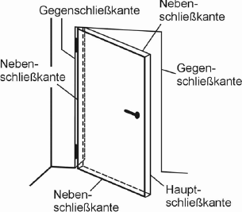
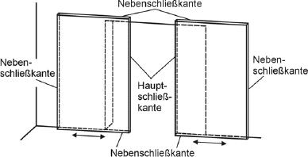
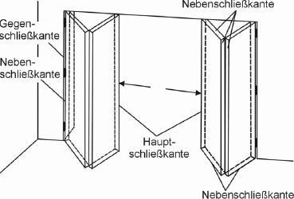
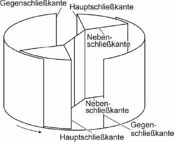
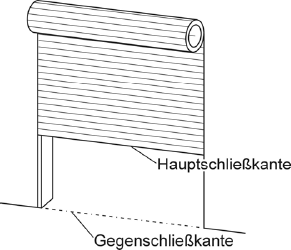
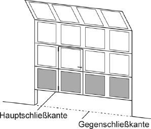
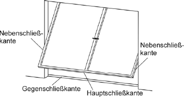
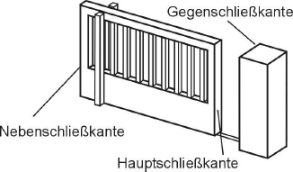

3.1 Abstürzen ist die unkontrollierte, nicht ausgeglichene Bewegung von vertikal bewegten Flügeln im Fall des Versagens eines einzelnen Tragmittels oder der Gewichtsausgleichssysteme.
3.2 Bewegungsraum ist der Raum, in dem die Flügel Öffnungs- und Schließbewegungen ausführen.
3.3 Der Fallweg von Torflügeln ist die senkrechte Strecke, die die Hauptschließkante nach dem Versagen der Tragmittel bis zum erfolgten Fangen durch die Fangvorrichtung zurücklegt.
3.4 Fangvorrichtungen sind Einrichtungen, die im Falle des Flügelabsturzes selbsttätig auf den Flügel oder das Bauteil, das mit ihm fest verbunden ist (z. B. Wickelwelle), wirken und ihn halten. Hierzu zählen auch Getriebe, die imstande sind, den Flügel zu halten, wenn tragende Getriebeteile versagen (Sicherheitsgetriebe).
3.5 Flügel sind diejenigen beweglichen Anlagenteile, die Tür- oder Toröffnungen schließen oder freigeben.
3.6 Gefährdungen an Türen und Toren ergeben sich besonders durch:
3.7 Herausfallen ist das ungewollte Verlassen des Tor- oder Türflügels aus der Führung.
3.8 Türen und Tore sind kraftbetätigt, wenn die für das Öffnen oder Schließen der Flügel erforderliche Energie vollständig oder teilweise von Kraftmaschinen zugeführt wird.
3.9 Nachlaufweg ist der Weg des kraftbetätigten Flügels, von der Einleitung des Stoppvorganges bis zum Stillstand.
3.10 Mit der NOT-HALT-Einrichtung kann im Fall einer Gefährdung die Flügelbewegung bewusst zum Stillstand gebracht werden.
3.11 Schließkanten sind (siehe Tabelle):
Tabelle: Schließkanten von Türen und Toren
| Tür/Tor | Schließkante | |
| a) | Drehflügeltüren/-tore sind Türen mit einem oder zwei Flügeln, die sich um die senkrechte Achse an einer Flügelkante drehen. |  |
| b) | Schiebetüren/-tore sind Türen mit einem oder mehreren sich horizontal bewegenden Türflügeln, die sich auf ihrer eigenen Ebene über eine Öffnung hinweg bewegen. |  |
| c) | Faltflügeltüren/-tore sind Türen mit zwei oder mehreren Flügeln, die miteinander gelenkig verbunden sind und bei denen eine Seite des Türflügels mit der Zarge verbunden ist. |  |
| d) | Karusselltüren sind Türen mit zwei oder mehreren Türflügeln, die mit einer gemeinsamen vertikalen Drehachse innerhalb einer Einfassung verbunden sind. |  |
| e) | Rolltore sind Tore mit einem Flügel, der vertikal bewegt wird und sich beim Öffnen auf eine Wickelwelle aufwickelt. |  |
| f) | Sektionaltore sind Tore mit einem Flügel, der aus einer Anzahl von horizontal miteinander verbundenen Sektionen besteht und in der Regel beim Öffnen vertikal angehoben wird. Die Ablage des Flügels in der oberen Öffnungsposition ist abhängig vom jeweiligen Typ (z. B. waagerecht, senkrecht, gefaltet). |  |
| g) | Kipptore sind Tore mit einem Flügel, der bei der Betätigung eine Kippbewegung ausführt und vollständig geöffnet in der oberen, waagerechten Endstellung verbleibt. |  |
| h) | Schiebetore sind Tore mit einem oder mehreren Flügeln, die horizontal bewegt werden. |  |
3.12 Schlupftüren sind Türen, die in Torflügeln eingebaut sind.
3.13 Schutzeinrichtungen sind Einrichtungen zum Schutz vor Gefährdungen, z. B. der Quetschgefährdung an Schließkanten:
3.14 Die Steuerung ist der Bestandteil der Antriebseinheit, der von außen kommende Steuerbefehle annimmt, diese verarbeitet und Ausgangssignale zum Betrieb des Antriebes erzeugt:
3.15 Tore sind bewegliche Raumabschlüsse, vorzugsweise für den Verkehr mit Fahrzeugen und für den Transport von Lasten mit oder ohne Personenbegleitung.
3.16 Türen sind bewegliche Raumabschlüsse, vorzugsweise für den Fußgängerverkehr.
3.17 Tragmittel sind Bauteile oder Einrichtungen zum Tragen des Flügels, z. B. Feder, Stahldrahtseil, Kette, Gurt, Rolle, Trommel, Welle, Hebelarm sowie sonstige Kraftübertragungselemente zwischen Antriebsquelle und Flügel (z. B. Getriebe).